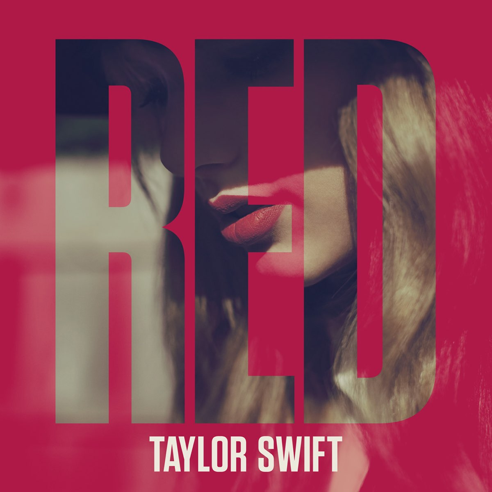

Red.

- State Of Grace
- Red
- Treacherous
- I Knew You Were Trouble
- All Too Well
- 22
- I Almost Do
- We Are Never Ever Getting Back Together
- Stay Stay Stay
- The Last Time (featuring Gary Lightbody)
- Holy Ground
- Sad Beautiful Tragic
- The Lucky One
- Everything Has Changed (featuring Ed Sheeran)
- Starlight
- Begin Again
Pincha aquí para volver al inicio.